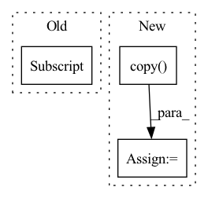

Pattern ID :962
Before Change
self.shared_network = nn.Sequential(*shared_network_layers)
dense_in_dim = reduce((lambda x, y: x * y), self.get_conv_image_shape(obs_space.shape[1:],
DEFAULT_CNN_ARCHITECTURE["CONV"] ))
DEFAULT_CNN_ARCHITECTURE["DENSE"][0]["in_dim"] = dense_in_dim
self.mean_layer = nn.Linear(DEFAULT_CNN_ARCHITECTURE["DENSE"][-1]["in_dim"], self.representation_dim)
self.scale_layer = nn.Linear(DEFAULT_CNN_ARCHITECTURE["DENSE"][-1]["in_dim"], self.representation_dim)After Change
// figure out how big the convolution output will be
conv_arch = DEFAULT_CNN_ARCHITECTURE["CONV"]
dense_arch = DEFAULT_CNN_ARCHITECTURE["DENSE"].copy() // copy to mutate
dense_in_dim = np.prod(sb_conv_arch_output_size(obs_space.shape[1:],
conv_arch))
dense_arch[0]["in_dim"] = dense_in_dimIn pattern: SUPERPATTERN
Frequency: 3
Non-data size: 3
Instances Fragment ID: 2041262
Project Name: humancompatibleai/eirli
Commit Name: 8b541daa337f51cff382d4fec8483069024de28c
Time: 2020-08-13
Author: sam@qxcv.net
File Name: src/il_representations/algos/encoders.py
Class Name: DefaultStochasticCNN
Method Name: __init__
Parent Class: nn.Module
Fragment ID: 2041260
Project Name: humancompatibleai/eirli
Commit Name: 18da158bab20c7b86c75c07bef2f12057dc3adf2
Time: 2020-08-13
Author: sam@qxcv.net
File Name: src/il_representations/algos/encoders.py
Class Name: DefaultStochasticCNN
Method Name: __init__
Parent Class: nn.Module
Fragment ID: 2041259
Project Name: benedekrozemberczki/pytorch_geometric_temporal
Commit Name: 2775ce5253580a592becb764f1a76d82c8e76e6e
Time: 2021-03-17
Author: He_YX@outlook.com
File Name: torch_geometric_temporal/nn/convolutional/astgcn.py
Class Name: cheb_conv_withSAt
Method Name: __init__
Parent Class: nn.Module